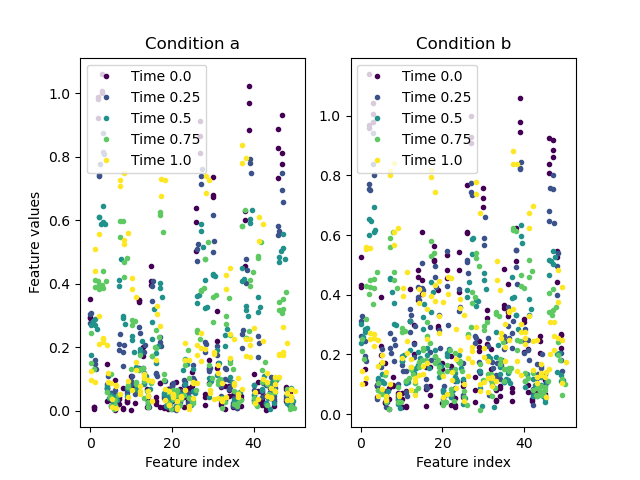

Module podomics.dataset
Dataset module for podomics.
Expand source code
"""Dataset module for podomics."""
import numpy as np
import pandas
import matplotlib
from matplotlib import pyplot
from sklearn import preprocessing
from sklearn.preprocessing import MaxAbsScaler
def read_csv(file, sample=None, time=None, condition=None, **kwargs):
"""
Import dataset from a CSV file.
TODO: info about file format.
Parameters
---
file : str, path, or buffer
The csv file to read from.
sample : str, default=None
Column header for sample labels. By default, no sample labels are used, and samples can only be indexed by integers.
time : str, default=None
Column header for time stamps.
If not given, try to find a column header starting with "Time"; raise an error if not found.
condition : str, default=None
Column header for conditions. By default, no conditions are considered.
**kwargs :
Are passed to [pandas.read_csv()](https://pandas.pydata.org/pandas-docs/stable/reference/api/pandas.read_csv.html) and can be used to adapt to specifics in the file format, e.g.:
* **`sep`**: separator string, pandas default is ','
* **`comment`**: character that identifies lines to be interpreted as comments
Returns
---
Dataset : object
The `Dataset` object constructed from the data in the given file.
Example usage:
---
>>> omics = read_csv("examples/exampledata1.csv", sample='Sample')
"""
df = pandas.read_csv(file, index_col=sample, **kwargs)
return Dataset(df, time, condition)
class Dataset(object):
"""Data container and various data handling and plotting methods.
"""
def __init__(self, data, time=None, condition=None, features=None):
"""The constructor creates a dataset from a pandas Dataframe.
Parameters
---
data : pandas DataFrame
Contains the data to analyse.
It should follow the column layout as explained under **`read_csv`**.
If sample labels are used, they should be stored in the index of the DataFrame.
time : str, default=None
Name of the column which contains the timestamps.
If not given, try to find a column header starting with "Time"; raise an error if not found.
condition : str, default=None
Name of the column which contains the conditions, no conditions are used if this is not given.
features : list of str, default=None
Column headers to use as features. Use all remaining if not given.
Attributes
---
data : pandas DataFrame
Access to the underlying DataFrame
time : str
Column header used for timestamps
condition : str
Column header used for condition labels
features : list of str
Column headers that are referring to features in the dataset
condition_list : list of str
List of unique condition labels found in the dataset
timepoints : array of numeric or str
Sorted array of timestamps found in the dataset
scaling : object
Class used for rescaling the data, see `Dataset.rescale`.
Example usage
---
>>> df = pandas.read_csv("examples/exampledata1.csv", index_col="Sample")
>>> omics = Dataset(df, time="Timepoint", features=['0', '1', '3', '4', '6'])
>>> omics.time
'Timepoint'
>>> omics.timepoints
array([0. , 0.25, 0.5 , 0.75, 1. ])
"""
self.data = data
num_cols = len(data.columns)
if time in data.columns:
self.time = time
else:
if time is None:
# try to infer time column
for c in data.columns:
if c.startswith("Time"):
time = c
if time is None:
raise ValueError(f"Could not identify a time column in {data.columns[:min(num_cols, 5)]}..., use the `time` parameter to specify one.")
else:
self.time = time
else:
raise ValueError(f'Time column "{time}" not found in data columns: {data.columns[:min(num_cols, 5)]}...')
# print(f"Found time column: {self.time}")
if condition is None:
self.condition_list = []
else:
if condition in self.data.columns:
self.condition_list = list(set(data[condition]))
else:
raise ValueError(f'Condition column "{condition}" not found in data columns: {data.columns[:min(num_cols, 5)]}...')
self.condition = condition
# print(f"Checked condition column: {self.condition}")
if features is None:
self.features = [f for f in data.columns if f not in (self.time, self.condition)]
else:
self.features = [f for f in features if (f in data.columns) and f not in (self.time, self.condition)]
if len(self.features)==0:
raise ValueError(f"Did not find any of the given feature names in data columns: {self.data.columns[:min(num_cols, 5)]}...")
# print(f"Found {len(self.features)} features")
# Check that all feature columns are numeric
# https://stackoverflow.com/questions/19900202/how-to-determine-whether-a-column-variable-is-numeric-or-not-in-pandas-numpy
from pandas.api.types import is_numeric_dtype
for f in self.features:
if not is_numeric_dtype(data[f]):
raise ValueError(f'Column "{f}" was interpreted as feature, but is not numeric:\n{self.data[f].head()}')
# print(f"Verified all feature columns contain numerical data.")
self.scaling = None
timepoints = self.data[self.time].unique()
timepoints.sort()
self.timepoints = timepoints
if self.condition is None:
columns = [self.time,] + self.features
else:
columns = [self.condition, self.time] + self.features
self.data = data.loc[:, columns]
# print(f"Transfered data in dataframe of shape {self.data.shape}.")
# sort rows first by condition if used, then by timepoint
if self.condition is not None:
self.data.sort_values(by=[self.condition, self.time], inplace=True)
else:
self.data.sort_values(by=[self.time], inplace=True)
# print(f"Sorted rows by conditions and timepoints.")
def rescale(self, method=MaxAbsScaler(), conditions=None, features=None):
"""Rescale the dataset with a transformation method from [sklearn.preprocessing](https://scikit-learn.org/stable/modules/classes.html#module-sklearn.preprocessing).
The data can optionally be filtered with the parameters **`conditions`** and **`features`** before the scaling.
The scaled result is returned as a new **`Dataset`** object.
The applied scaling method is stored in the `scaling` attribute of the returned `Dataset` object.
Parameters
---
method : object, default=MaxAbsScaler() from sklearn.preprocessing
Instance of a transformation class from [sklearn.preprocessing](https://scikit-learn.org/stable/modules/classes.html#module-sklearn.preprocessing) to be used for resaling the data.
For median scaling, the class `MedianScaler` provided in this module can be used.
conditions: list of str, default=None
Restrict the data to conditions given here before scaling.
features: list of str, default=None
Restrict the data to features given here before scaling.
Returns
---
Dataset : object
Dataset with the scaled values.
The `scaling` attribute is set to the object passed in the `method` parameter.
Example usage
---
#### Load a dataset
>>> omics = read_csv("examples/exampledata1.csv", sample="Sample")
#### Scaling with maximum absolute value
>>> scaled = omics.rescale()
>>> np.allclose([scaled.data[f].max() for f in scaled.features], 1.0)
True
#### Scaling with median
>>> scaled = omics.rescale(method=MedianScaler())
>>> np.allclose([scaled.data[f].median() for f in scaled.features], 1.0)
True
"""
scaler = method
if features is None:
features = self.features
if self.condition is None or conditions is None:
df = self.data
else:
df = self.data[self.data[self.condition].isin(conditions)]
method.fit(df.loc[:, features])
df_scaled = df.copy()
df_scaled.loc[:, features] = method.transform(df.loc[:, features])
data_scaled = Dataset(df_scaled, time=self.time, condition=self.condition, features=features)
data_scaled.scaling = method
return data_scaled
def plot(self, ax=None, condition=None, features=None, colormap='viridis', legend=True):
"""Plot the dataset.
This method creates a scatterplot where feature values are plotted vs. feature index.
Data from different timepoints can be colored differently via a colormap.
Parameters
---
ax : matplotlib Axes, default=None
If given: plot into these axes, otherwise create a new figure to plot in.
condition : str or list of str, default=None
Choose the condition (from `Dataset.condition_list`) to plot.
If a list is given, plot all conditions in the list in subplots. This is only possible with a newly created figure.
Default is to plot all conditions in the dataset.
features : list of str, default=None
List of features to include in the plot.
Default is to plot all features in the dataset.
colormap : str or matplotlib Colormap, default='viridis'
Colormap to use for choosing the color for each timepoint.
legend : Boolean, default=True
Set to `False` to not show the legend.
Labels on plotted objects are still assigned, so the legend can be created separately by calling `ax.legend()` on the plot axes.
Returns
---
fig : matplotlib Figure object
Figure object created for the plot.
Only if `ax=None` is used, else nothing is returned.
ax : list or single object of matplotlib Axes
Axes created for the different conditions that are plotted.
Only if `ax=None` is used, else nothing is returned.
Example usage
---
Here we load a dataset with two conditions from the examples directory.
>>> omics = read_csv("examples/exampledata3.csv", sample="Sample", time="Timepoint", condition="Condition")
A direct call to the plot method will create two subplots, one for each of the two conditions in that dataset:
>>> f, axs = omics.plot(condition=["a", "b"])
>>> f.savefig("docs/podomics/images/rawdata_plot3.png")
In this example, the created figure and subplots are returned in the `f` and `axs` variables.
For that dataset, the plot should look like this:

"""
if self.condition is not None:
if condition is None:
conditions = self.condition_list
else:
conditions = [condition,] if isinstance(condition, str) else condition
for c in conditions:
if c not in self.condition_list:
raise ValueError(f"Condition {c} not found in available dataset conditions: {self.condition_list}")
df = self.data[self.data[self.condition].isin(conditions)]
else:
df = self.data
conditions = [None,]
if ax is None:
fig, axs = pyplot.subplots(1, len(conditions))
axs[0].set_ylabel("Feature values")
for i in range(len(conditions)):
axs[i].set_xlabel("Feature index")
if self.condition is not None:
axs[i].set_title("Condition " + conditions[i])
new_fig = True
else:
if len(conditions) > 1:
raise ValueError(f"Plotting in a given axes is only supported with a single condition, not for the list {conditions}")
new_fig = False
axs = [ax,]
if isinstance(colormap, str):
colormap = matplotlib.colormaps[colormap]
if features is None:
features = self.features
else:
for f in features:
if f not in self.features:
raise ValueError(f"Feature {f} not found in available dataset features: {self.features}")
for i, ti in enumerate(self.timepoints):
df_ti = df[df[self.time] == ti]
# try to get the color by interpolating numerical values, otherwise just try to interpolate by index
try:
cvalue = ti / (self.timepoints[-1] - self.timepoints[0])
except TypeError:
cvalue = i / len(self.timepoints)
color = colormap(cvalue)
is_labelled = [False,] * len(axs)
for j, rowj in enumerate(df_ti.iterrows()):
if len(conditions) > 1:
axi = conditions.index(rowj[1].loc[self.condition])
else:
axi = 0
ax = axs[axi]
if not is_labelled[axi]:
ax.plot(np.arange(len(features))+(i)*0.3, rowj[1].loc[features].astype(np.float64), '.', c=color, label="Time " + str(ti))
is_labelled[axi] = True
else:
ax.plot(np.arange(len(features))+(i)*0.3/len(self.timepoints), rowj[1].loc[features].astype(np.float64), '.', c=color)
if legend:
for ax in axs:
ax.legend()
if new_fig:
return fig, axs
from sklearn.utils.validation import (
check_is_fitted,
check_random_state,
_check_sample_weight,
FLOAT_DTYPES,
)
from sklearn.preprocessing._data import _handle_zeros_in_scale
class MedianScaler(MaxAbsScaler):
"""Scale each feature by its median value.
The implementation follows closely the one in [`sklearn.preprocessing.MaxAbsScaler`](https://scikit-learn.org/stable/modules/generated/sklearn.preprocessing.MaxAbsScaler.html).
However, sparse data matrices are not supported for fitting, only for the transformation.
The following documentation is replicated from `sklearn.preprocessing.MaxAbsScaler`. See there for more details and examples.
This estimator scales and translates each feature individually such
that the median value of each feature in the
training set will be 1.0. It does not shift/center the data, and
thus does not destroy any sparsity.
Parameters
----------
copy : bool, default=True
Set to False to perform inplace scaling and avoid a copy (if the input
is already a numpy array).
Attributes
----------
scale_ : ndarray of shape (n_features,)
Per feature relative scaling of the data.
median_ : ndarray of shape (n_features,)
Per feature median value.
n_features_in_ : int
Number of features seen during `fit`.
feature_names_in_ : ndarray of shape (`n_features_in_`,)
Names of features seen during `fit`. Defined only when `X`
has feature names that are all strings.
n_samples_seen_ : int
The number of samples processed by the estimator.
"""
def fit(self, X, y=None):
"""Compute the median value of X for later scaling.
Parameters
----------
X : array-like of shape (n_samples, n_features)
The data used to compute the mean and standard deviation
used for later scaling along the features axis.
y : None
Ignored.
Returns
-------
self : object
Fitted scaler.
"""
self._reset()
self._validate_params()
X = self._validate_data(
X,
reset=True,
accept_sparse=None,
dtype=FLOAT_DTYPES,
force_all_finite="allow-nan",
)
self.n_samples_seen_ = X.shape[0]
self.median_ = np.nanmedian(X, axis=0)
self.scale_ = _handle_zeros_in_scale(self.median_, copy=True)
return self
Functions
def read_csv(file, sample=None, time=None, condition=None, **kwargs)-
Import dataset from a CSV file.
TODO: info about file format.
Parameters
file:str, path,orbuffer- The csv file to read from.
sample:str, default=None- Column header for sample labels. By default, no sample labels are used, and samples can only be indexed by integers.
time:str, default=None- Column header for time stamps. If not given, try to find a column header starting with "Time"; raise an error if not found.
condition:str, default=None- Column header for conditions. By default, no conditions are considered.
**kwargs- Are passed to pandas.read_csv() and can be used to adapt to specifics in the file format, e.g.:
sep: separator string, pandas default is ','comment: character that identifies lines to be interpreted as comments
Returns
Dataset:object- The
Datasetobject constructed from the data in the given file.
Example usage:
>>> omics = read_csv("examples/exampledata1.csv", sample='Sample')Expand source code
def read_csv(file, sample=None, time=None, condition=None, **kwargs): """ Import dataset from a CSV file. TODO: info about file format. Parameters --- file : str, path, or buffer The csv file to read from. sample : str, default=None Column header for sample labels. By default, no sample labels are used, and samples can only be indexed by integers. time : str, default=None Column header for time stamps. If not given, try to find a column header starting with "Time"; raise an error if not found. condition : str, default=None Column header for conditions. By default, no conditions are considered. **kwargs : Are passed to [pandas.read_csv()](https://pandas.pydata.org/pandas-docs/stable/reference/api/pandas.read_csv.html) and can be used to adapt to specifics in the file format, e.g.: * **`sep`**: separator string, pandas default is ',' * **`comment`**: character that identifies lines to be interpreted as comments Returns --- Dataset : object The `Dataset` object constructed from the data in the given file. Example usage: --- >>> omics = read_csv("examples/exampledata1.csv", sample='Sample') """ df = pandas.read_csv(file, index_col=sample, **kwargs) return Dataset(df, time, condition)
Classes
class Dataset (data, time=None, condition=None, features=None)-
Data container and various data handling and plotting methods.
The constructor creates a dataset from a pandas Dataframe.
Parameters
data:pandas DataFrame- Contains the data to analyse.
It should follow the column layout as explained under
read_csv(). If sample labels are used, they should be stored in the index of the DataFrame. time:str, default=None- Name of the column which contains the timestamps. If not given, try to find a column header starting with "Time"; raise an error if not found.
condition:str, default=None- Name of the column which contains the conditions, no conditions are used if this is not given.
features:listofstr, default=None- Column headers to use as features. Use all remaining if not given.
Attributes
data:pandas DataFrame- Access to the underlying DataFrame
time:str- Column header used for timestamps
condition:str- Column header used for condition labels
features:listofstr- Column headers that are referring to features in the dataset
condition_list:listofstr- List of unique condition labels found in the dataset
timepoints:arrayofnumericorstr- Sorted array of timestamps found in the dataset
scaling:object- Class used for rescaling the data, see
Dataset.rescale().
Example Usage
>>> df = pandas.read_csv("examples/exampledata1.csv", index_col="Sample") >>> omics = Dataset(df, time="Timepoint", features=['0', '1', '3', '4', '6']) >>> omics.time 'Timepoint' >>> omics.timepoints array([0. , 0.25, 0.5 , 0.75, 1. ])Expand source code
class Dataset(object): """Data container and various data handling and plotting methods. """ def __init__(self, data, time=None, condition=None, features=None): """The constructor creates a dataset from a pandas Dataframe. Parameters --- data : pandas DataFrame Contains the data to analyse. It should follow the column layout as explained under **`read_csv`**. If sample labels are used, they should be stored in the index of the DataFrame. time : str, default=None Name of the column which contains the timestamps. If not given, try to find a column header starting with "Time"; raise an error if not found. condition : str, default=None Name of the column which contains the conditions, no conditions are used if this is not given. features : list of str, default=None Column headers to use as features. Use all remaining if not given. Attributes --- data : pandas DataFrame Access to the underlying DataFrame time : str Column header used for timestamps condition : str Column header used for condition labels features : list of str Column headers that are referring to features in the dataset condition_list : list of str List of unique condition labels found in the dataset timepoints : array of numeric or str Sorted array of timestamps found in the dataset scaling : object Class used for rescaling the data, see `Dataset.rescale`. Example usage --- >>> df = pandas.read_csv("examples/exampledata1.csv", index_col="Sample") >>> omics = Dataset(df, time="Timepoint", features=['0', '1', '3', '4', '6']) >>> omics.time 'Timepoint' >>> omics.timepoints array([0. , 0.25, 0.5 , 0.75, 1. ]) """ self.data = data num_cols = len(data.columns) if time in data.columns: self.time = time else: if time is None: # try to infer time column for c in data.columns: if c.startswith("Time"): time = c if time is None: raise ValueError(f"Could not identify a time column in {data.columns[:min(num_cols, 5)]}..., use the `time` parameter to specify one.") else: self.time = time else: raise ValueError(f'Time column "{time}" not found in data columns: {data.columns[:min(num_cols, 5)]}...') # print(f"Found time column: {self.time}") if condition is None: self.condition_list = [] else: if condition in self.data.columns: self.condition_list = list(set(data[condition])) else: raise ValueError(f'Condition column "{condition}" not found in data columns: {data.columns[:min(num_cols, 5)]}...') self.condition = condition # print(f"Checked condition column: {self.condition}") if features is None: self.features = [f for f in data.columns if f not in (self.time, self.condition)] else: self.features = [f for f in features if (f in data.columns) and f not in (self.time, self.condition)] if len(self.features)==0: raise ValueError(f"Did not find any of the given feature names in data columns: {self.data.columns[:min(num_cols, 5)]}...") # print(f"Found {len(self.features)} features") # Check that all feature columns are numeric # https://stackoverflow.com/questions/19900202/how-to-determine-whether-a-column-variable-is-numeric-or-not-in-pandas-numpy from pandas.api.types import is_numeric_dtype for f in self.features: if not is_numeric_dtype(data[f]): raise ValueError(f'Column "{f}" was interpreted as feature, but is not numeric:\n{self.data[f].head()}') # print(f"Verified all feature columns contain numerical data.") self.scaling = None timepoints = self.data[self.time].unique() timepoints.sort() self.timepoints = timepoints if self.condition is None: columns = [self.time,] + self.features else: columns = [self.condition, self.time] + self.features self.data = data.loc[:, columns] # print(f"Transfered data in dataframe of shape {self.data.shape}.") # sort rows first by condition if used, then by timepoint if self.condition is not None: self.data.sort_values(by=[self.condition, self.time], inplace=True) else: self.data.sort_values(by=[self.time], inplace=True) # print(f"Sorted rows by conditions and timepoints.") def rescale(self, method=MaxAbsScaler(), conditions=None, features=None): """Rescale the dataset with a transformation method from [sklearn.preprocessing](https://scikit-learn.org/stable/modules/classes.html#module-sklearn.preprocessing). The data can optionally be filtered with the parameters **`conditions`** and **`features`** before the scaling. The scaled result is returned as a new **`Dataset`** object. The applied scaling method is stored in the `scaling` attribute of the returned `Dataset` object. Parameters --- method : object, default=MaxAbsScaler() from sklearn.preprocessing Instance of a transformation class from [sklearn.preprocessing](https://scikit-learn.org/stable/modules/classes.html#module-sklearn.preprocessing) to be used for resaling the data. For median scaling, the class `MedianScaler` provided in this module can be used. conditions: list of str, default=None Restrict the data to conditions given here before scaling. features: list of str, default=None Restrict the data to features given here before scaling. Returns --- Dataset : object Dataset with the scaled values. The `scaling` attribute is set to the object passed in the `method` parameter. Example usage --- #### Load a dataset >>> omics = read_csv("examples/exampledata1.csv", sample="Sample") #### Scaling with maximum absolute value >>> scaled = omics.rescale() >>> np.allclose([scaled.data[f].max() for f in scaled.features], 1.0) True #### Scaling with median >>> scaled = omics.rescale(method=MedianScaler()) >>> np.allclose([scaled.data[f].median() for f in scaled.features], 1.0) True """ scaler = method if features is None: features = self.features if self.condition is None or conditions is None: df = self.data else: df = self.data[self.data[self.condition].isin(conditions)] method.fit(df.loc[:, features]) df_scaled = df.copy() df_scaled.loc[:, features] = method.transform(df.loc[:, features]) data_scaled = Dataset(df_scaled, time=self.time, condition=self.condition, features=features) data_scaled.scaling = method return data_scaled def plot(self, ax=None, condition=None, features=None, colormap='viridis', legend=True): """Plot the dataset. This method creates a scatterplot where feature values are plotted vs. feature index. Data from different timepoints can be colored differently via a colormap. Parameters --- ax : matplotlib Axes, default=None If given: plot into these axes, otherwise create a new figure to plot in. condition : str or list of str, default=None Choose the condition (from `Dataset.condition_list`) to plot. If a list is given, plot all conditions in the list in subplots. This is only possible with a newly created figure. Default is to plot all conditions in the dataset. features : list of str, default=None List of features to include in the plot. Default is to plot all features in the dataset. colormap : str or matplotlib Colormap, default='viridis' Colormap to use for choosing the color for each timepoint. legend : Boolean, default=True Set to `False` to not show the legend. Labels on plotted objects are still assigned, so the legend can be created separately by calling `ax.legend()` on the plot axes. Returns --- fig : matplotlib Figure object Figure object created for the plot. Only if `ax=None` is used, else nothing is returned. ax : list or single object of matplotlib Axes Axes created for the different conditions that are plotted. Only if `ax=None` is used, else nothing is returned. Example usage --- Here we load a dataset with two conditions from the examples directory. >>> omics = read_csv("examples/exampledata3.csv", sample="Sample", time="Timepoint", condition="Condition") A direct call to the plot method will create two subplots, one for each of the two conditions in that dataset: >>> f, axs = omics.plot(condition=["a", "b"]) >>> f.savefig("docs/podomics/images/rawdata_plot3.png") In this example, the created figure and subplots are returned in the `f` and `axs` variables. For that dataset, the plot should look like this:  """ if self.condition is not None: if condition is None: conditions = self.condition_list else: conditions = [condition,] if isinstance(condition, str) else condition for c in conditions: if c not in self.condition_list: raise ValueError(f"Condition {c} not found in available dataset conditions: {self.condition_list}") df = self.data[self.data[self.condition].isin(conditions)] else: df = self.data conditions = [None,] if ax is None: fig, axs = pyplot.subplots(1, len(conditions)) axs[0].set_ylabel("Feature values") for i in range(len(conditions)): axs[i].set_xlabel("Feature index") if self.condition is not None: axs[i].set_title("Condition " + conditions[i]) new_fig = True else: if len(conditions) > 1: raise ValueError(f"Plotting in a given axes is only supported with a single condition, not for the list {conditions}") new_fig = False axs = [ax,] if isinstance(colormap, str): colormap = matplotlib.colormaps[colormap] if features is None: features = self.features else: for f in features: if f not in self.features: raise ValueError(f"Feature {f} not found in available dataset features: {self.features}") for i, ti in enumerate(self.timepoints): df_ti = df[df[self.time] == ti] # try to get the color by interpolating numerical values, otherwise just try to interpolate by index try: cvalue = ti / (self.timepoints[-1] - self.timepoints[0]) except TypeError: cvalue = i / len(self.timepoints) color = colormap(cvalue) is_labelled = [False,] * len(axs) for j, rowj in enumerate(df_ti.iterrows()): if len(conditions) > 1: axi = conditions.index(rowj[1].loc[self.condition]) else: axi = 0 ax = axs[axi] if not is_labelled[axi]: ax.plot(np.arange(len(features))+(i)*0.3, rowj[1].loc[features].astype(np.float64), '.', c=color, label="Time " + str(ti)) is_labelled[axi] = True else: ax.plot(np.arange(len(features))+(i)*0.3/len(self.timepoints), rowj[1].loc[features].astype(np.float64), '.', c=color) if legend: for ax in axs: ax.legend() if new_fig: return fig, axsMethods
def plot(self, ax=None, condition=None, features=None, colormap='viridis', legend=True)-
Plot the dataset.
This method creates a scatterplot where feature values are plotted vs. feature index. Data from different timepoints can be colored differently via a colormap.
Parameters
ax:matplotlib Axes, default=None- If given: plot into these axes, otherwise create a new figure to plot in.
condition:strorlistofstr, default=None- Choose the condition (from
Dataset.condition_list) to plot. If a list is given, plot all conditions in the list in subplots. This is only possible with a newly created figure. Default is to plot all conditions in the dataset. features:listofstr, default=None- List of features to include in the plot. Default is to plot all features in the dataset.
colormap:strormatplotlib Colormap, default='viridis'- Colormap to use for choosing the color for each timepoint.
legend:Boolean, default=True- Set to
Falseto not show the legend. Labels on plotted objects are still assigned, so the legend can be created separately by callingax.legend()on the plot axes.
Returns
fig:matplotlib Figure object- Figure object created for the plot.
Only if
ax=Noneis used, else nothing is returned. ax:listorsingle objectofmatplotlib Axes- Axes created for the different conditions that are plotted.
Only if
ax=Noneis used, else nothing is returned.
Example Usage
Here we load a dataset with two conditions from the examples directory.
>>> omics = read_csv("examples/exampledata3.csv", sample="Sample", time="Timepoint", condition="Condition")A direct call to the plot method will create two subplots, one for each of the two conditions in that dataset:
>>> f, axs = omics.plot(condition=["a", "b"]) >>> f.savefig("docs/podomics/images/rawdata_plot3.png")In this example, the created figure and subplots are returned in the
fandaxsvariables. For that dataset, the plot should look like this: Expand source code
def plot(self, ax=None, condition=None, features=None, colormap='viridis', legend=True): """Plot the dataset. This method creates a scatterplot where feature values are plotted vs. feature index. Data from different timepoints can be colored differently via a colormap. Parameters --- ax : matplotlib Axes, default=None If given: plot into these axes, otherwise create a new figure to plot in. condition : str or list of str, default=None Choose the condition (from `Dataset.condition_list`) to plot. If a list is given, plot all conditions in the list in subplots. This is only possible with a newly created figure. Default is to plot all conditions in the dataset. features : list of str, default=None List of features to include in the plot. Default is to plot all features in the dataset. colormap : str or matplotlib Colormap, default='viridis' Colormap to use for choosing the color for each timepoint. legend : Boolean, default=True Set to `False` to not show the legend. Labels on plotted objects are still assigned, so the legend can be created separately by calling `ax.legend()` on the plot axes. Returns --- fig : matplotlib Figure object Figure object created for the plot. Only if `ax=None` is used, else nothing is returned. ax : list or single object of matplotlib Axes Axes created for the different conditions that are plotted. Only if `ax=None` is used, else nothing is returned. Example usage --- Here we load a dataset with two conditions from the examples directory. >>> omics = read_csv("examples/exampledata3.csv", sample="Sample", time="Timepoint", condition="Condition") A direct call to the plot method will create two subplots, one for each of the two conditions in that dataset: >>> f, axs = omics.plot(condition=["a", "b"]) >>> f.savefig("docs/podomics/images/rawdata_plot3.png") In this example, the created figure and subplots are returned in the `f` and `axs` variables. For that dataset, the plot should look like this:  """ if self.condition is not None: if condition is None: conditions = self.condition_list else: conditions = [condition,] if isinstance(condition, str) else condition for c in conditions: if c not in self.condition_list: raise ValueError(f"Condition {c} not found in available dataset conditions: {self.condition_list}") df = self.data[self.data[self.condition].isin(conditions)] else: df = self.data conditions = [None,] if ax is None: fig, axs = pyplot.subplots(1, len(conditions)) axs[0].set_ylabel("Feature values") for i in range(len(conditions)): axs[i].set_xlabel("Feature index") if self.condition is not None: axs[i].set_title("Condition " + conditions[i]) new_fig = True else: if len(conditions) > 1: raise ValueError(f"Plotting in a given axes is only supported with a single condition, not for the list {conditions}") new_fig = False axs = [ax,] if isinstance(colormap, str): colormap = matplotlib.colormaps[colormap] if features is None: features = self.features else: for f in features: if f not in self.features: raise ValueError(f"Feature {f} not found in available dataset features: {self.features}") for i, ti in enumerate(self.timepoints): df_ti = df[df[self.time] == ti] # try to get the color by interpolating numerical values, otherwise just try to interpolate by index try: cvalue = ti / (self.timepoints[-1] - self.timepoints[0]) except TypeError: cvalue = i / len(self.timepoints) color = colormap(cvalue) is_labelled = [False,] * len(axs) for j, rowj in enumerate(df_ti.iterrows()): if len(conditions) > 1: axi = conditions.index(rowj[1].loc[self.condition]) else: axi = 0 ax = axs[axi] if not is_labelled[axi]: ax.plot(np.arange(len(features))+(i)*0.3, rowj[1].loc[features].astype(np.float64), '.', c=color, label="Time " + str(ti)) is_labelled[axi] = True else: ax.plot(np.arange(len(features))+(i)*0.3/len(self.timepoints), rowj[1].loc[features].astype(np.float64), '.', c=color) if legend: for ax in axs: ax.legend() if new_fig: return fig, axs def rescale(self, method=MaxAbsScaler(), conditions=None, features=None)-
Rescale the dataset with a transformation method from sklearn.preprocessing.
The data can optionally be filtered with the parameters
conditionsandfeaturesbefore the scaling.The scaled result is returned as a new
Datasetobject. The applied scaling method is stored in thescalingattribute of the returnedDatasetobject.Parameters
method:object, default=MaxAbsScaler() from sklearn.preprocessing- Instance of a transformation class from sklearn.preprocessing to be used for resaling the data.
For median scaling, the class
MedianScalerprovided in this module can be used. conditions:listofstr, default=None- Restrict the data to conditions given here before scaling.
features:listofstr, default=None- Restrict the data to features given here before scaling.
Returns
Dataset:object- Dataset with the scaled values.
The
scalingattribute is set to the object passed in themethodparameter.
Example Usage
Load a dataset
>>> omics = read_csv("examples/exampledata1.csv", sample="Sample")Scaling with maximum absolute value
>>> scaled = omics.rescale() >>> np.allclose([scaled.data[f].max() for f in scaled.features], 1.0) TrueScaling with median
>>> scaled = omics.rescale(method=MedianScaler()) >>> np.allclose([scaled.data[f].median() for f in scaled.features], 1.0) TrueExpand source code
def rescale(self, method=MaxAbsScaler(), conditions=None, features=None): """Rescale the dataset with a transformation method from [sklearn.preprocessing](https://scikit-learn.org/stable/modules/classes.html#module-sklearn.preprocessing). The data can optionally be filtered with the parameters **`conditions`** and **`features`** before the scaling. The scaled result is returned as a new **`Dataset`** object. The applied scaling method is stored in the `scaling` attribute of the returned `Dataset` object. Parameters --- method : object, default=MaxAbsScaler() from sklearn.preprocessing Instance of a transformation class from [sklearn.preprocessing](https://scikit-learn.org/stable/modules/classes.html#module-sklearn.preprocessing) to be used for resaling the data. For median scaling, the class `MedianScaler` provided in this module can be used. conditions: list of str, default=None Restrict the data to conditions given here before scaling. features: list of str, default=None Restrict the data to features given here before scaling. Returns --- Dataset : object Dataset with the scaled values. The `scaling` attribute is set to the object passed in the `method` parameter. Example usage --- #### Load a dataset >>> omics = read_csv("examples/exampledata1.csv", sample="Sample") #### Scaling with maximum absolute value >>> scaled = omics.rescale() >>> np.allclose([scaled.data[f].max() for f in scaled.features], 1.0) True #### Scaling with median >>> scaled = omics.rescale(method=MedianScaler()) >>> np.allclose([scaled.data[f].median() for f in scaled.features], 1.0) True """ scaler = method if features is None: features = self.features if self.condition is None or conditions is None: df = self.data else: df = self.data[self.data[self.condition].isin(conditions)] method.fit(df.loc[:, features]) df_scaled = df.copy() df_scaled.loc[:, features] = method.transform(df.loc[:, features]) data_scaled = Dataset(df_scaled, time=self.time, condition=self.condition, features=features) data_scaled.scaling = method return data_scaled
class MedianScaler (*, copy=True)-
Scale each feature by its median value.
The implementation follows closely the one in
sklearn.preprocessing.MaxAbsScaler. However, sparse data matrices are not supported for fitting, only for the transformation.The following documentation is replicated from
sklearn.preprocessing.MaxAbsScaler. See there for more details and examples.This estimator scales and translates each feature individually such that the median value of each feature in the training set will be 1.0. It does not shift/center the data, and thus does not destroy any sparsity.
Parameters
copy:bool, default=True- Set to False to perform inplace scaling and avoid a copy (if the input is already a numpy array).
Attributes
scale_:ndarrayofshape (n_features,)- Per feature relative scaling of the data.
median_:ndarrayofshape (n_features,)- Per feature median value.
n_features_in_:int- Number of features seen during
fit. feature_names_in_:ndarrayofshape (n_features_in_,)- Names of features seen during
fit. Defined only whenXhas feature names that are all strings. n_samples_seen_:int- The number of samples processed by the estimator.
Expand source code
class MedianScaler(MaxAbsScaler): """Scale each feature by its median value. The implementation follows closely the one in [`sklearn.preprocessing.MaxAbsScaler`](https://scikit-learn.org/stable/modules/generated/sklearn.preprocessing.MaxAbsScaler.html). However, sparse data matrices are not supported for fitting, only for the transformation. The following documentation is replicated from `sklearn.preprocessing.MaxAbsScaler`. See there for more details and examples. This estimator scales and translates each feature individually such that the median value of each feature in the training set will be 1.0. It does not shift/center the data, and thus does not destroy any sparsity. Parameters ---------- copy : bool, default=True Set to False to perform inplace scaling and avoid a copy (if the input is already a numpy array). Attributes ---------- scale_ : ndarray of shape (n_features,) Per feature relative scaling of the data. median_ : ndarray of shape (n_features,) Per feature median value. n_features_in_ : int Number of features seen during `fit`. feature_names_in_ : ndarray of shape (`n_features_in_`,) Names of features seen during `fit`. Defined only when `X` has feature names that are all strings. n_samples_seen_ : int The number of samples processed by the estimator. """ def fit(self, X, y=None): """Compute the median value of X for later scaling. Parameters ---------- X : array-like of shape (n_samples, n_features) The data used to compute the mean and standard deviation used for later scaling along the features axis. y : None Ignored. Returns ------- self : object Fitted scaler. """ self._reset() self._validate_params() X = self._validate_data( X, reset=True, accept_sparse=None, dtype=FLOAT_DTYPES, force_all_finite="allow-nan", ) self.n_samples_seen_ = X.shape[0] self.median_ = np.nanmedian(X, axis=0) self.scale_ = _handle_zeros_in_scale(self.median_, copy=True) return selfAncestors
- sklearn.preprocessing._data.MaxAbsScaler
- sklearn.base.OneToOneFeatureMixin
- sklearn.base.TransformerMixin
- sklearn.utils._set_output._SetOutputMixin
- sklearn.base.BaseEstimator
Methods
def fit(self, X, y=None)-
Compute the median value of X for later scaling.
Parameters
X:array-likeofshape (n_samples, n_features)- The data used to compute the mean and standard deviation used for later scaling along the features axis.
y:None- Ignored.
Returns
self:object- Fitted scaler.
Expand source code
def fit(self, X, y=None): """Compute the median value of X for later scaling. Parameters ---------- X : array-like of shape (n_samples, n_features) The data used to compute the mean and standard deviation used for later scaling along the features axis. y : None Ignored. Returns ------- self : object Fitted scaler. """ self._reset() self._validate_params() X = self._validate_data( X, reset=True, accept_sparse=None, dtype=FLOAT_DTYPES, force_all_finite="allow-nan", ) self.n_samples_seen_ = X.shape[0] self.median_ = np.nanmedian(X, axis=0) self.scale_ = _handle_zeros_in_scale(self.median_, copy=True) return self def fit_transform(self, X, y=None, **fit_params)-
Fit to data, then transform it.
Fits transformer to
Xandywith optional parametersfit_paramsand returns a transformed version ofX.Parameters
X:array-likeofshape (n_samples, n_features)- Input samples.
y:array-likeofshape (n_samples,)or(n_samples, n_outputs), default=None- Target values (None for unsupervised transformations).
**fit_params:dict- Additional fit parameters.
Returns
X_new:ndarray arrayofshape (n_samples, n_features_new)- Transformed array.
Expand source code
def fit_transform(self, X, y=None, **fit_params): """ Fit to data, then transform it. Fits transformer to `X` and `y` with optional parameters `fit_params` and returns a transformed version of `X`. Parameters ---------- X : array-like of shape (n_samples, n_features) Input samples. y : array-like of shape (n_samples,) or (n_samples, n_outputs), \ default=None Target values (None for unsupervised transformations). **fit_params : dict Additional fit parameters. Returns ------- X_new : ndarray array of shape (n_samples, n_features_new) Transformed array. """ # non-optimized default implementation; override when a better # method is possible for a given clustering algorithm if y is None: # fit method of arity 1 (unsupervised transformation) return self.fit(X, **fit_params).transform(X) else: # fit method of arity 2 (supervised transformation) return self.fit(X, y, **fit_params).transform(X) def transform(self, X)-
Scale the data.
Parameters
X:{array-like, sparse matrix}ofshape (n_samples, n_features)- The data that should be scaled.
Returns
X_tr:{ndarray, sparse matrix}ofshape (n_samples, n_features)- Transformed array.
Expand source code
def transform(self, X): """Scale the data. Parameters ---------- X : {array-like, sparse matrix} of shape (n_samples, n_features) The data that should be scaled. Returns ------- X_tr : {ndarray, sparse matrix} of shape (n_samples, n_features) Transformed array. """ check_is_fitted(self) X = self._validate_data( X, accept_sparse=("csr", "csc"), copy=self.copy, reset=False, dtype=FLOAT_DTYPES, force_all_finite="allow-nan", ) if sparse.issparse(X): inplace_column_scale(X, 1.0 / self.scale_) else: X /= self.scale_ return X